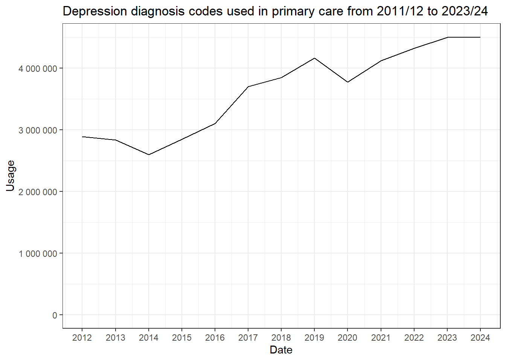
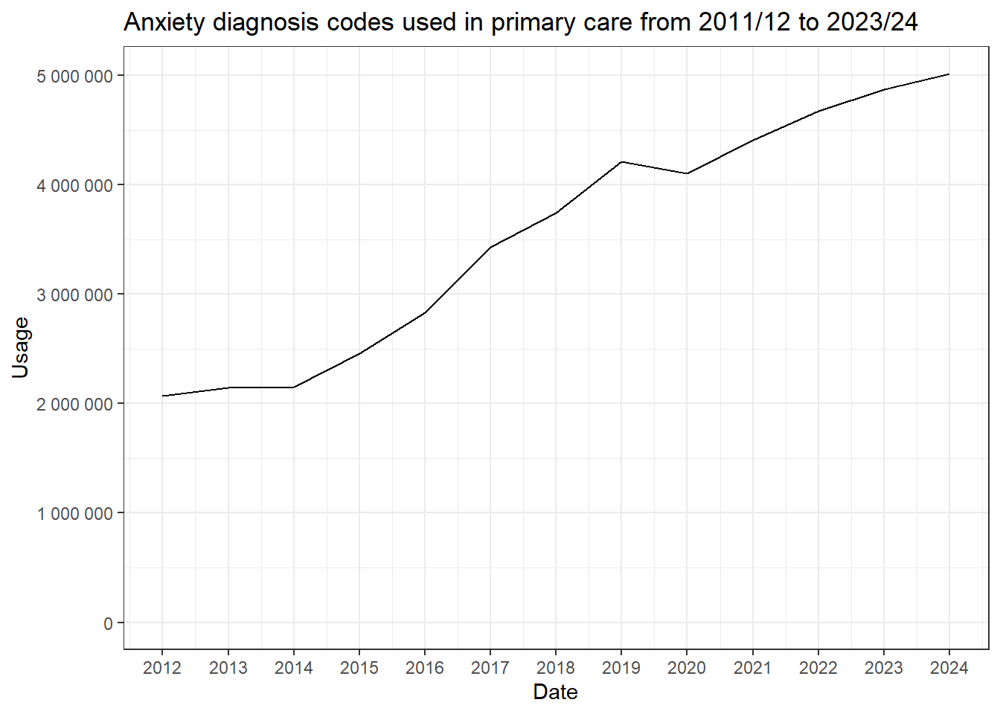
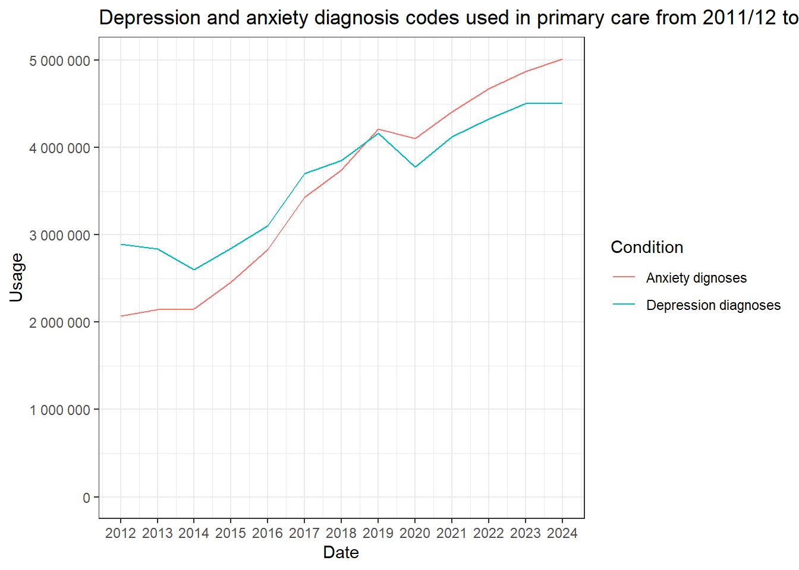

library(opencodecounts)
library(tidyverse)
library(scales)Depression and anxiety diagnosis code usage
Load packages
Load codelists
Load codelists from NHSD Primary Care Domain Refsets.
depr_cod <- get_codelist("nhsd-primary-care-domain-refsets/depr_cod/20241205")
anx_cod <- get_codelist("nhsd-primary-care-domain-refsets/anxiety-diagnostic-codes/20241205")Missing codes
Look at SNOMED CT codes that are missing from our codelists
Depression
# Remove all codes that are in our codelist
snomed_usage_without_depr_cod <- snomed_usage |>
filter(!snomed_code %in% depr_cod$code)
# Search for related codes (e.g., with "depression" in description) and review
snomed_usage_without_depr_cod_review <- snomed_usage_without_depr_cod |>
filter(str_detect(description, "depression"))
n_depr_codes <- nrow(snomed_usage_without_depr_cod_review)There are 857 codes that are not in our codelist. These codes could be reviewed by a clinical expert to determine if they should be included here. For now, we will assume that they are not relevant as they have not been included in the NHSD refset.
Anxiety
# Remove all codes that are in our codelist
snomed_usage_without_anx_cod <- snomed_usage |>
filter(!snomed_code %in% anx_cod$code)
# Search for related codes (e.g., with "depression" in description) and review
snomed_usage_without_anx_cod_review <- snomed_usage_without_anx_cod |>
filter(str_detect(description, "anxiety"))
n_anx_codes <- nrow(snomed_usage_without_anx_cod_review)There are 441 codes that are not in our codelist. These codes could be reviewed by a clinical expert to determine if they should be included here. For now, we will assume that they are not relevant as they have not been included in the NHSD refset.
Frenquency of code usage
Depression
The below table summarises the frequency of each code from 2011/12 to 2023/24 included in the depression codelist.
depr_cod_summary <- snomed_usage %>%
filter(snomed_code %in% depr_cod$code) %>%
group_by(snomed_code, description) %>%
summarise(usage = sum(usage), .groups = "drop") %>%
mutate(percent_usage = round(100 * usage / sum(usage), 1)) %>%
arrange(desc(usage))
knitr::kable(depr_cod_summary, caption = "Summary of depression SNOMED CT codes")| snomed_code | description | usage | percent_usage |
|---|---|---|---|
| 231504006 | Mixed anxiety and depressive disorder (disorder) | 20659770 | 43.8 |
| 35489007 | Depressive disorder (disorder) | 20623000 | 43.7 |
| 310496002 | Moderate depression (disorder) | 1098060 | 2.3 |
| 87414006 | Reactive depression (situational) (disorder) | 1042110 | 2.2 |
| 191616006 | Recurrent depression (disorder) | 990730 | 2.1 |
| 310495003 | Mild depression (disorder) | 434190 | 0.9 |
| 192080009 | Chronic depression (disorder) | 357170 | 0.8 |
| 310497006 | Severe depression (disorder) | 287310 | 0.6 |
| 300706003 | Endogenous depression (disorder) | 251490 | 0.5 |
| 36923009 | Major depression, single episode (disorder) | 217360 | 0.5 |
| 78667006 | Dysthymia (disorder) | 171700 | 0.4 |
| 83458005 | Agitated depression (disorder) | 158640 | 0.3 |
| 274948002 | Endogenous depression - recurrent (disorder) | 134630 | 0.3 |
| 191604000 | Single major depressive episode, severe, with psychosis (disorder) | 122470 | 0.3 |
| 231499006 | Endogenous depression first episode (disorder) | 96870 | 0.2 |
| 268621008 | Recurrent major depressive episodes (disorder) | 68420 | 0.1 |
| 73867007 | Severe major depression with psychotic features (disorder) | 54090 | 0.1 |
| 247803002 | Seasonal affective disorder (disorder) | 51760 | 0.1 |
| 15639000 | Moderate major depression, single episode (disorder) | 47470 | 0.1 |
| 191676002 | Reactive depressive psychosis (disorder) | 46570 | 0.1 |
| 832007 | Moderate major depression (disorder) | 30510 | 0.1 |
| 191613003 | Recurrent major depressive episodes, severe, with psychosis (disorder) | 29560 | 0.1 |
| 79298009 | Mild major depression, single episode (disorder) | 26210 | 0.1 |
| 191611001 | Recurrent major depressive episodes, moderate (disorder) | 22810 | 0.0 |
| 755321000000106 | Single major depressive episode, severe, with psychosis, psychosis in remission (disorder) | 19240 | 0.0 |
| 251000119105 | Severe major depression, single episode (disorder) | 18890 | 0.0 |
| 84760002 | Schizoaffective disorder, depressive type (disorder) | 17520 | 0.0 |
| 755331000000108 | Recurrent major depressive episodes, severe, with psychosis, psychosis in remission (disorder) | 15480 | 0.0 |
| 75084000 | Severe major depression without psychotic features (disorder) | 13500 | 0.0 |
| 237349002 | Mild postnatal depression (disorder) | 13210 | 0.0 |
| 28475009 | Severe recurrent major depression with psychotic features (disorder) | 12190 | 0.0 |
| 764611000000100 | Recurrent major depressive episodes, severe (disorder) | 11950 | 0.0 |
| 370143000 | Major depressive disorder (disorder) | 9850 | 0.0 |
| 192049004 | Prolonged depressive adjustment reaction (disorder) | 9260 | 0.0 |
| 698957003 | Depressive disorder in remission (disorder) | 8210 | 0.0 |
| 191610000 | Recurrent major depressive episodes, mild (disorder) | 6710 | 0.0 |
| 191634005 | Bipolar affective disorder, currently depressed, in full remission (disorder) | 4860 | 0.0 |
| 40568001 | Recurrent brief depressive disorder (disorder) | 4440 | 0.0 |
| 191659001 | Atypical depressive disorder (disorder) | 4040 | 0.0 |
| 231500002 | Masked depression (disorder) | 3560 | 0.0 |
| 87512008 | Mild major depression (disorder) | 3220 | 0.0 |
| 765176007 | Psychosis and severe depression co-occurrent and due to bipolar affective disorder (disorder) | 2890 | 0.0 |
| 191459006 | Senile dementia with depression (disorder) | 2130 | 0.0 |
| 465441000000108 | [X]Moderate depressive episode (disorder) | 1740 | 0.0 |
| 1086471000000103 | Recurrent reactive depressive episodes, severe, with psychosis (disorder) | 1270 | 0.0 |
| 1089641000000100 | Recurrent depression with current moderate episode (disorder) | 900 | 0.0 |
| 76441001 | Severe major depression, single episode, without psychotic features (disorder) | 900 | 0.0 |
| 36474008 | Severe recurrent major depression without psychotic features (disorder) | 850 | 0.0 |
| 16264901000119109 | Recurrent moderate major depressive disorder co-occurrent with anxiety (disorder) | 810 | 0.0 |
| 46244001 | Recurrent major depression in full remission (disorder) | 800 | 0.0 |
| 19527009 | Single episode of major depression in full remission (disorder) | 760 | 0.0 |
| 1089511000000100 | Recurrent depression with current severe episode and psychotic features (disorder) | 700 | 0.0 |
| 16264621000119109 | Recurrent mild major depressive disorder co-occurrent with anxiety (disorder) | 700 | 0.0 |
| 788120007 | Antenatal depression (disorder) | 600 | 0.0 |
| 70747007 | Major depression single episode, in partial remission (disorder) | 500 | 0.0 |
| 16264821000119108 | Recurrent severe major depressive disorder co-occurrent with anxiety (disorder) | 480 | 0.0 |
| 720453001 | Moderately severe major depression single episode (disorder) | 480 | 0.0 |
| 1089631000000109 | Recurrent depression with current severe episode without psychotic features (disorder) | 470 | 0.0 |
| 1153570009 | Treatment resistant depression (disorder) | 460 | 0.0 |
| 1086661000000108 | Reactive depression, prolonged single episode (disorder) | 450 | 0.0 |
| 430421000000104 | [X]Mild depressive episode (disorder) | 410 | 0.0 |
| 764691000000109 | Recurrent major depressive episodes, in partial remission (disorder) | 390 | 0.0 |
| 191455000 | Presenile dementia with depression (disorder) | 370 | 0.0 |
| 397701000000102 | [X]Severe depressive episode without psychotic symptoms (disorder) | 350 | 0.0 |
| 18818009 | Moderate recurrent major depression (disorder) | 320 | 0.0 |
| 68019004 | Recurrent major depression in remission (disorder) | 270 | 0.0 |
| 231485007 | Post-schizophrenic depression (disorder) | 260 | 0.0 |
| 42810003 | Major depression in remission (disorder) | 210 | 0.0 |
| 357705009 | Cotard’s syndrome (disorder) | 190 | 0.0 |
| 288751000119101 | Reactive depressive psychosis, single episode (disorder) | 160 | 0.0 |
| 16265951000119109 | Mild major depressive disorder co-occurrent with anxiety single episode (disorder) | 150 | 0.0 |
| 77911002 | Severe major depression, single episode, with psychotic features, mood-congruent (disorder) | 150 | 0.0 |
| 16266831000119100 | Moderate major depressive disorder co-occurrent with anxiety single episode (disorder) | 140 | 0.0 |
| 16266991000119108 | Severe major depressive disorder co-occurrent with anxiety single episode (disorder) | 130 | 0.0 |
| 69392006 | Major depressive disorder, single episode with catatonic features (disorder) | 130 | 0.0 |
| 1153575004 | Persistent depressive disorder (disorder) | 110 | 0.0 |
| 764711000000106 | Single major depressive episode, in remission (disorder) | 90 | 0.0 |
| 426578000 | Premenstrual dysphoric disorder in remission (disorder) | 70 | 0.0 |
| 40379007 | Mild recurrent major depression (disorder) | 60 | 0.0 |
| 16265061000119105 | Recurrent major depressive disorder co-occurrent with anxiety in full remission (disorder) | 50 | 0.0 |
| 25922000 | Major depressive disorder, single episode with postpartum onset (disorder) | 50 | 0.0 |
| 63412003 | Major depression in full remission (disorder) | 50 | 0.0 |
| 14183003 | Chronic major depressive disorder, single episode (disorder) | 40 | 0.0 |
| 16265301000119106 | Recurrent major depressive disorder in partial remission co-occurrent with anxiety (disorder) | 40 | 0.0 |
| 33135002 | Recurrent major depression in partial remission (disorder) | 40 | 0.0 |
| 104851000119103 | Postpartum major depression in remission (disorder) | 30 | 0.0 |
| 16238221000119109 | Depressive disorder caused by methamphetamine (disorder) | 30 | 0.0 |
| 20250007 | Severe major depression, single episode, with psychotic features, mood-incongruent (disorder) | 30 | 0.0 |
| 30605009 | Major depression in partial remission (disorder) | 30 | 0.0 |
| 720454007 | Minimal major depression single episode (disorder) | 30 | 0.0 |
| 16238181000119101 | Depressive disorder caused by amphetamine (disorder) | 20 | 0.0 |
| 321717001 | Involutional depression (disorder) | 20 | 0.0 |
| 42925002 | Major depressive disorder, single episode with atypical features (disorder) | 20 | 0.0 |
| 1260298008 | Depression following menopause (disorder) | 10 | 0.0 |
| 63778009 | Major depressive disorder, single episode with melancholic features (disorder) | 10 | 0.0 |
Anxiety
The below table summarises the frequency of each code from 2011/12 to 2023/24 included in the anxiety codelist.
anx_cod_summary <- snomed_usage %>%
filter(snomed_code %in% anx_cod$code) %>%
group_by(snomed_code, description) %>%
summarise(usage = sum(usage), .groups = "drop") %>%
mutate(percent_usage = round(100 * usage / sum(usage), 1)) %>%
arrange(desc(usage))
knitr::kable(anx_cod_summary, caption = "Summary of anxiety SNOMED CT codes")| snomed_code | description | usage | percent_usage |
|---|---|---|---|
| 231504006 | Mixed anxiety and depressive disorder (disorder) | 20659770 | 44.8 |
| 197480006 | Anxiety disorder (disorder) | 13705140 | 29.7 |
| 198288003 | Anxiety state (finding) | 4085680 | 8.9 |
| 48694002 | Anxiety (finding) | 3572040 | 7.7 |
| 21897009 | Generalized anxiety disorder (disorder) | 1493400 | 3.2 |
| 371631005 | Panic disorder (disorder) | 580480 | 1.3 |
| 191708009 | Chronic anxiety (finding) | 544060 | 1.2 |
| 161470009 | History of anxiety state (situation) | 275320 | 0.6 |
| 191709001 | Recurrent anxiety (finding) | 234810 | 0.5 |
| 191722009 | Agoraphobia with panic attacks (disorder) | 121340 | 0.3 |
| 386810004 | Phobic disorder (disorder) | 114790 | 0.2 |
| 70691001 | Agoraphobia (disorder) | 104740 | 0.2 |
| 231501003 | Needle phobia (finding) | 100780 | 0.2 |
| 25501002 | Social phobia (disorder) | 82920 | 0.2 |
| 247854002 | Flying phobia (finding) | 53610 | 0.1 |
| 19887002 | Claustrophobia (finding) | 53010 | 0.1 |
| 247805009 | Anxiety and fear (finding) | 41720 | 0.1 |
| 386808001 | Phobia (finding) | 39290 | 0.1 |
| 247808006 | Anxiety about body function or health (finding) | 36480 | 0.1 |
| 38617005 | Dental phobia (finding) | 28550 | 0.1 |
| 64165008 | Avoidant disorder of childhood (disorder) | 24430 | 0.1 |
| 54587008 | Simple phobia (disorder) | 20330 | 0.0 |
| 71959007 | Elective mutism (disorder) | 18870 | 0.0 |
| 313387002 | Phonophobia (finding) | 15640 | 0.0 |
| 11806006 | Separation anxiety disorder of childhood (disorder) | 14380 | 0.0 |
| 231528008 | Anxious personality disorder (disorder) | 12620 | 0.0 |
| 34563004 | Fear of getting cancer (finding) | 11560 | 0.0 |
| 54307006 | Zoophobia (finding) | 7460 | 0.0 |
| 286710008 | Anxious character (finding) | 7020 | 0.0 |
| 207363009 | Anxiety neurosis (finding) | 6160 | 0.0 |
| 126943008 | Separation anxiety (disorder) | 5400 | 0.0 |
| 61569007 | Agoraphobia without history of panic disorder (disorder) | 5110 | 0.0 |
| 247825008 | Anxiety about behavior or performance (finding) | 3650 | 0.0 |
| 191725006 | Social phobia, fear of public speaking (disorder) | 3250 | 0.0 |
| 279622009 | Performance anxiety (finding) | 3190 | 0.0 |
| 225635005 | Anxiety about treatment (finding) | 2920 | 0.0 |
| 277827008 | Anxiety about dying (finding) | 2750 | 0.0 |
| 192108001 | Disturbance of anxiety and fearfulness in childhood and adolescence (disorder) | 2570 | 0.0 |
| 231508009 | Examination fear (finding) | 2290 | 0.0 |
| 191737008 | Compulsive neurosis (disorder) | 1960 | 0.0 |
| 702535006 | Anxiety about breathlessness (finding) | 1880 | 0.0 |
| 271947006 | School phobia (finding) | 1700 | 0.0 |
| 231507004 | Stage fright (finding) | 1510 | 0.0 |
| 17496003 | Organic anxiety disorder (disorder) | 1330 | 0.0 |
| 191724005 | Social phobia, fear of eating in public (disorder) | 1230 | 0.0 |
| 277825000 | Anxiety about shaking (finding) | 970 | 0.0 |
| 192611004 | Childhood phobic anxiety disorder (disorder) | 940 | 0.0 |
| 58963008 | Acrophobia (finding) | 850 | 0.0 |
| 225642005 | Anxiety about not coping with parenthood (finding) | 820 | 0.0 |
| 16264901000119109 | Recurrent moderate major depressive disorder co-occurrent with anxiety (disorder) | 810 | 0.0 |
| 16264621000119109 | Recurrent mild major depressive disorder co-occurrent with anxiety (disorder) | 700 | 0.0 |
| 231506008 | Anxiety hysteria (finding) | 690 | 0.0 |
| 351861000000106 | Stranger anxiety (disorder) | 610 | 0.0 |
| 225644006 | Anxiety about altered body image (finding) | 600 | 0.0 |
| 277833004 | Anxiety about fainting (finding) | 540 | 0.0 |
| 277822002 | Anxiety about choking (finding) | 530 | 0.0 |
| 277826004 | Anxiety about sweating (finding) | 490 | 0.0 |
| 16264821000119108 | Recurrent severe major depressive disorder co-occurrent with anxiety (disorder) | 480 | 0.0 |
| 277834005 | Anxiety about having a heart attack (finding) | 400 | 0.0 |
| 268669006 | Childhood and adolescent disturbance with elective mutism (disorder) | 390 | 0.0 |
| 280947008 | Examination phobia (finding) | 340 | 0.0 |
| 563201000000101 | Phobic disorder NOS (finding) | 330 | 0.0 |
| 13438001 | Overanxious disorder of childhood (disorder) | 320 | 0.0 |
| 225637002 | Anxiety about loss of control (finding) | 310 | 0.0 |
| 782501005 | Adjustment disorder with mixed anxiety and depressed mood (disorder) | 260 | 0.0 |
| 61387006 | Moderate anxiety (finding) | 250 | 0.0 |
| 1325321000000108 | Anxiety related to clinical environment (finding) | 240 | 0.0 |
| 277818007 | Anxiety about losing control of bowels (finding) | 240 | 0.0 |
| 304871006 | Anxious avoidant attachment (finding) | 230 | 0.0 |
| 56576003 | Panic disorder without agoraphobia (disorder) | 230 | 0.0 |
| 89225005 | Anxiety about blushing (finding) | 230 | 0.0 |
| 1362921000000109 | History of separation anxiety (situation) | 220 | 0.0 |
| 277823007 | Anxiety about swallowing (finding) | 200 | 0.0 |
| 80583007 | Severe anxiety (panic) (finding) | 200 | 0.0 |
| 225638007 | Anxiety about resuming sexual relations (finding) | 190 | 0.0 |
| 70997004 | Mild anxiety (finding) | 190 | 0.0 |
| 102919003 | Fear of infection (finding) | 180 | 0.0 |
| 198280005 | Parasitophobia (finding) | 180 | 0.0 |
| 248231000000103 | Paruresis (disorder) | 170 | 0.0 |
| 277824001 | Anxiety about collapsing (finding) | 170 | 0.0 |
| 191726007 | Social phobia, fear of public washing (disorder) | 140 | 0.0 |
| 277820005 | Anxiety about vomiting in public (finding) | 140 | 0.0 |
| 102920009 | Fear of contracting human immunodeficiency virus infection (finding) | 130 | 0.0 |
| 225636006 | Anxiety about forced dependence (finding) | 130 | 0.0 |
| 225643000 | Anxiety about making mistakes (finding) | 130 | 0.0 |
| 247818001 | Fear of having a heart attack (finding) | 130 | 0.0 |
| 277829006 | Anxiety about losing emotional control (finding) | 130 | 0.0 |
| 277819004 | Anxiety about wetting self (finding) | 120 | 0.0 |
| 191720001 | Phobic disorders (& [social] or [phobic anxiety]) (disorder) | 110 | 0.0 |
| 247866008 | Fear of contracting disease (finding) | 110 | 0.0 |
| 277831002 | Anxiety about becoming fat (finding) | 100 | 0.0 |
| 277838008 | Anxiety about appearing ridiculous (finding) | 100 | 0.0 |
| 277839000 | Anxiety about saying the wrong thing (finding) | 100 | 0.0 |
| 247868009 | Fear of contracting venereal disease (finding) | 70 | 0.0 |
| 277828003 | Anxiety about going crazy (finding) | 70 | 0.0 |
| 111487009 | Dream anxiety disorder (disorder) | 50 | 0.0 |
| 277821009 | Anxiety about having a fit (finding) | 50 | 0.0 |
| 304896009 | Castration anxiety complex (finding) | 50 | 0.0 |
| 69479009 | Anxiety hyperventilation (disorder) | 50 | 0.0 |
| 102922001 | Tocophobia (finding) | 40 | 0.0 |
| 16265301000119106 | Recurrent major depressive disorder in partial remission co-occurrent with anxiety (disorder) | 40 | 0.0 |
| 191723004 | Agoraphobia without mention of panic attacks (disorder) | 40 | 0.0 |
| 35607004 | Panic disorder with agoraphobia (disorder) | 40 | 0.0 |
| 43150009 | Panic disorder without agoraphobia with severe panic attacks (disorder) | 40 | 0.0 |
| 72861004 | Panic disorder without agoraphobia with mild panic attacks (disorder) | 40 | 0.0 |
| 89948007 | Panic disorder with agoraphobia AND mild panic attacks (disorder) | 40 | 0.0 |
| 53467004 | Anxiety disorder of childhood (disorder) | 30 | 0.0 |
| 5509004 | Panic disorder with agoraphobia AND severe panic attacks (disorder) | 30 | 0.0 |
| 65064003 | Panic disorder without agoraphobia with moderate panic attacks (disorder) | 30 | 0.0 |
| 94641000119109 | Anxiety in pregnancy (disorder) | 30 | 0.0 |
| 323341000000102 | Anxiety about lethargy (finding) | 20 | 0.0 |
| 323351000000104 | Anxiety about mood (finding) | 20 | 0.0 |
| 34938008 | Anxiety disorder caused by alcohol (disorder) | 20 | 0.0 |
| 39951001 | Cannabis-induced anxiety disorder (disorder) | 20 | 0.0 |
| 53956006 | Panic disorder without agoraphobia with panic attacks in partial remission (disorder) | 20 | 0.0 |
| 724451007 | Fear of breast cancer (finding) | 20 | 0.0 |
| 762331007 | Anxiety disorder caused by stimulant (disorder) | 20 | 0.0 |
| 81350009 | Free-floating anxiety (finding) | 20 | 0.0 |
| 8185002 | Panic disorder with agoraphobia AND moderate panic attacks (disorder) | 20 | 0.0 |
| 82339009 | Anxiety disorder caused by amfetamine (disorder) | 20 | 0.0 |
| 1004005008 | Secondary tocophobia (finding) | 10 | 0.0 |
| 102918006 | Microphobia (finding) | 10 | 0.0 |
| 102921008 | Toxicophobia (finding) | 10 | 0.0 |
| 102928002 | Theophobia (finding) | 10 | 0.0 |
| 16265701000119107 | Illness anxiety disorder (disorder) | 10 | 0.0 |
| 238965007 | Venereophobia (disorder) | 10 | 0.0 |
| 247869001 | Fear of contracting radiation sickness (finding) | 10 | 0.0 |
| 34938008 | Alcohol-induced anxiety disorder (disorder) | 10 | 0.0 |
| 370567003 | Noise phobia (finding) | 10 | 0.0 |
| 61212007 | Panic disorder with agoraphobia, severe agoraphobic avoidance AND severe panic attacks (disorder) | 10 | 0.0 |
| 723120003 | Fear of hematological disease (finding) | 10 | 0.0 |
| 82738004 | Panic disorder with agoraphobia, moderate agoraphobic avoidance AND moderate panic attacks (disorder) | 10 | 0.0 |
| 83631006 | Panic disorder with agoraphobia, moderate agoraphobic avoidance AND severe panic attacks (disorder) | 10 | 0.0 |
Coding trends over time
Depression
The below figure shows the coding of depression diagnoses over time
depression_coding_trend <- snomed_usage %>%
filter(snomed_code %in% depr_cod$code) %>%
group_by(start_date, end_date) %>%
summarise(usage = sum(usage), .groups = "drop")
depression_plot <- ggplot(depression_coding_trend, aes(y = usage, x = end_date)) +
geom_line() +
labs(title = "Depression diagnosis codes used in primary care from 2011/12 to 2023/24",
x = "Date",
y = "Usage") +
scale_x_date(breaks = seq(from = min(depression_coding_trend$end_date), to = max(depression_coding_trend$end_date), by = "1 year"),labels = date_format("%Y")) +
scale_y_continuous(labels = label_number(), limits = c(0,NA)) +
theme_bw()
depression_plot
Anxiety
The below figure shows the coding of anxiety diagnoses over time.
anxiety_coding_trend <- snomed_usage %>%
filter(snomed_code %in% anx_cod$code) %>%
group_by(start_date, end_date) %>%
summarise(usage = sum(usage), .groups = "drop")
anxiety_plot <- ggplot(anxiety_coding_trend, aes(y = usage, x = end_date)) +
geom_line() +
labs(title = "Anxiety diagnosis codes used in primary care from 2011/12 to 2023/24",
x = "Date",
y = "Usage") +
scale_x_date(
breaks = seq(from = min(anxiety_coding_trend$end_date), to = max(anxiety_coding_trend$end_date), by = "1 year"),
labels = date_format("%Y")
) +
scale_y_continuous(labels = label_number(), limits = c(0,NA)) +
theme_bw()
anxiety_plot
Comparisons between trends in depression and anxiety coding
depression_coding_trend <- depression_coding_trend %>%
mutate(Condition = "Depression diagnoses")
anxiety_coding_trend <- anxiety_coding_trend %>%
mutate(Condition = "Anxiety dignoses")
combined_diagnoses <- rbind(depression_coding_trend, anxiety_coding_trend)
combined_plot <- ggplot(combined_diagnoses, aes(y = usage, x = end_date)) +
geom_line(aes(color = Condition)) +
labs(title = "Depression and anxiety diagnosis codes used in primary care from 2011/12 to 2023/24",
x = "Date",
y = "Usage") +
scale_x_date(
breaks = seq(from = min(combined_diagnoses$end_date), to = max(combined_diagnoses$end_date), by = "1 year"),
labels = date_format("%Y")
) +
scale_y_continuous(labels = label_number(), limits = c(0,NA)) +
theme_bw()
combined_plot